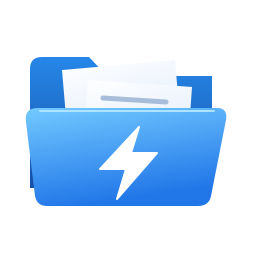
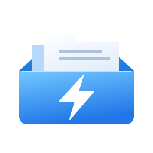
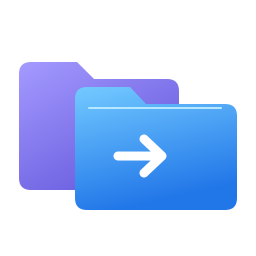

01

Folio Bolt
SVG ↓
Closest to the current icon
The familiar blue folio and white bolt, freed from its macOS tile. The safest evolution of Rile’s identity.
Six freestanding directions for Windows. No colored backplate, no rounded-square tile — just the icon, with real transparency around its silhouette.

The familiar blue folio and white bolt, freed from its macOS tile. The safest evolution of Rile’s identity.
An open folder with a folded corner. Less decoration, a strong silhouette, and a calmer everyday presence.

A freestanding file drawer with staggered folders. Keeps the bolt while giving the app a more substantial object-like form.

Two overlapping folder panes, not a generic app badge. Blue and indigo make the dual-pane workflow the identity.
A continuous folded path suggests an “r” and forward motion. An open, abstract mark instead of another folder.
A golden folder with a blue forward arrow. A warmer alternative that puts file navigation first and speed second.